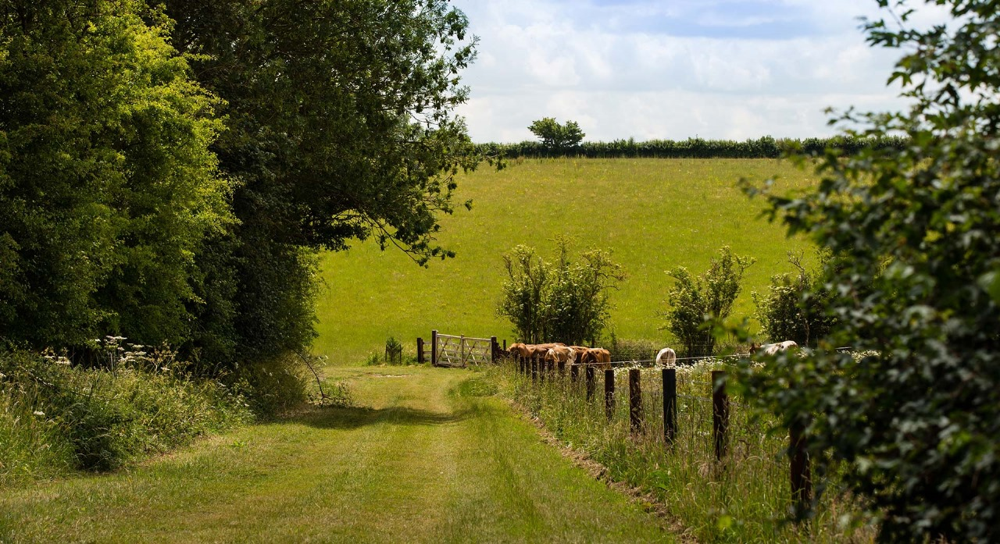

Organic Research center
Who we Are
The Organic Research Centre (ORC) is the UK’s leading independent organic research organisation.From climate emergency to food security, the way we farm is key to solving some of the biggest issues facing us today.
Changes in our agricultural practices have never been more needed. If we continue intensive farming, we will be responsible
for the continued decline of many species, including pollinators, soil organisms and the natural enemies of pests. Habitats will
continue to be degraded, and pollution levels will rise.
It doesn’t have to be that way. Our in-the-field research and knowledge exchange activity enables the transition to naturally
healthy and resilient farming systems. We build evidence and understanding of the positive impact of organic and agroecological
farming, and practical information to help farmers and growers do it better.
Our Research


We provide continuing research into organic and agroecological farming methods to improve the uptake, efficiency and development
of organic farming, and to help agriculture fulfil the principles of health, ecology, fairness and care.We’ve been exploring
better ways to farm and feed ourselves, and safeguard natural resources, from many different angles since 1980.Working with a
varied network of collaborators, including universities, research institutes and leaders in British and European agriculture,
our scientific research is based on:
Diversification. Harnessing the diversity of living organisms to fit agricultural production within ecological cycles.
Integration. Following an interdisciplinary approach mirroring the interactions between the different components of agriculture,
from genes to society.
Participation. Working with farmers and other stakeholders to identify problems, co-create knowledge and work towards
practical and applicable solutions.
Key Research Themes

|

|

|

|

|
Knowledge Exchange
Co-innovation is at the core of ORC’s work. In our Knowledge Exchange and Policy work we expand the
accessibility of the results of our research beyond those directly involved. This bridges the gap between our
research and its application in a real world setting by effectively communicating our results, in tailored formats,
to decision makers in agriculture and associated industries.
Decision makers can range from politicians and civil servants to individual farmers working to manage
their farm according to organic principles to conservation organisations looking to understand how organic
and agroecological farming can contribute to protecting nature. Ultimately, we aim to deliver the behavioural
change necessary for fair transition to better farming systems.
Our team works to ensure that our research is available to food and farming practitioners in the best formats
possible. Please don’t hesitate to get in touch with any questions